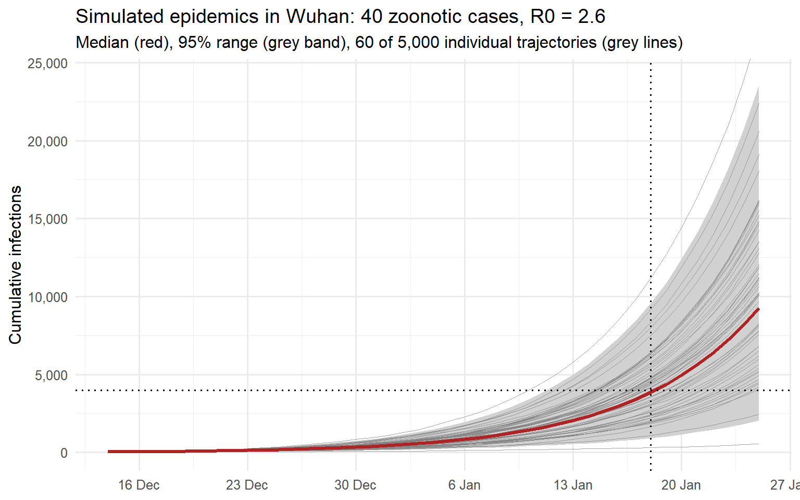
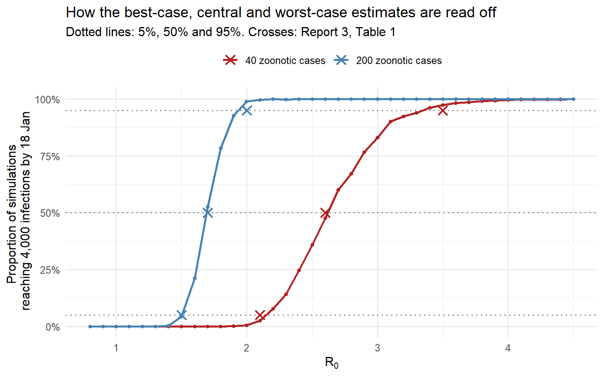
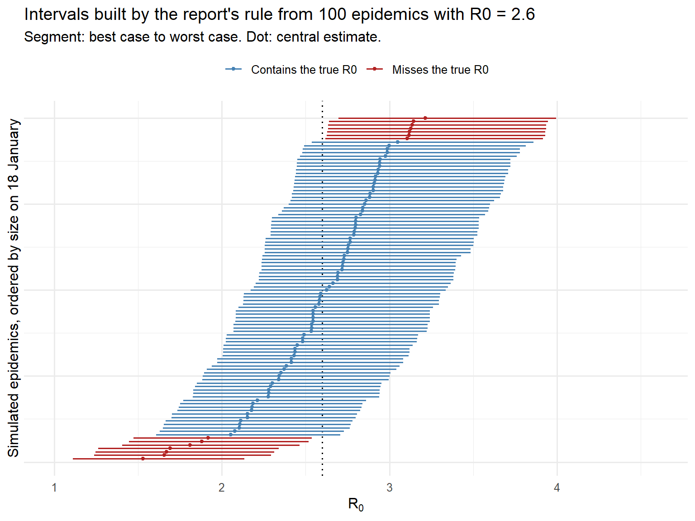

target_date <- as.Date("2020-01-18") # date of Report 2's outbreak-size estimate
target_cases <- 4000 # Report 2's central estimate
report_date <- as.Date("2020-01-25") # Report 3's publication date; end of plot
R0_baseline <- 2.6 # Report 3's central estimate for 40 zoonotic cases
k_sars <- 0.16 # offspring dispersion estimated for SARS
gt_mean <- 8.4 # SARS generation time, mean in days
gt_sd <- 3.8 # SARS generation time, SD in days
# Gamma distribution with the stated mean and SD
gt_shape <- (gt_mean / gt_sd)^2
gt_rate <- gt_mean / gt_sd^2From Outbreak Size to Transmissibility: Imperial’s Third COVID-19 Report
R
COVID-19
epidemiology
reproduction number
stochastic simulation
statistical inference
Reconstructing Imperial’s third COVID-19 report in R: how outbreak size informed transmissibility, what its uncertainty intervals mean, and which assumptions shaped the results.
A new question: could the outbreak sustain itself?
In the previous post, we saw how a few cases detected abroad revealed a much larger outbreak in Wuhan. Imperial College London’s first two reports used travel data and overseas detections to estimate its size. Report 2 estimated 4,000 cases with symptom onset by 18 January 2020, with an uncertainty range of 1,000–9,700. (1)
The third report, published on 25 January 2020, used those estimates to ask whether human-to-human transmission could sustain the outbreak. Imperial’s report summary
The central quantity was the basic reproduction number, \(R_0\): the average number of new infections caused by one infected person in a fully susceptible population before control measures. Under stable conditions, chains shrink on average when \(R_0<1\) and can grow when \(R_0>1\). Individual chains can still die out by chance. (2)
We will read the report in its January 2020 setting, distinguish evidence from assumptions, and reconstruct its simulation in R. We will compare the results with Figure 1 and Table 1, examine the intervals’ statistical meaning, and contrast the approach with Riou and Althaus’s Bayesian analysis, published five days later.
What Imperial knew—and what it assumed
The analysis combined an inferred outbreak size with assumptions about transmission. (1,3)
| Input | Report’s starting point | Evidential status |
|---|---|---|
| Outbreak size | 4,000 cases by 18 January; alternatives of 1,000 and 9,700 | Previous estimate from exported cases |
| Initial animal-to-human cases | Scenarios spanning 40–200 | Unknown quantity explored through assumptions |
| Generation time | Baseline mean of 8.4 days | Borrowed from SARS |
| Individual transmission | Substantial variation, following SARS | Assumed for the new virus |
The inferred case total was uncertain because travel, detection and reporting were imperfect. Using its point estimate as a fixed input leaves that uncertainty unaccounted for.
The total also combines initial animal-to-human infections with subsequent human-to-human infections. Outbreak size alone cannot separate them; the assumed number of initial cases determines how much onward transmission the model must explain.
How the report turned a case count into a reproduction number
Figure 1 shows 5,000 simulated epidemics starting from 40 animal-to-human infections in December 2019, with SARS-like generation time and variation in infectiousness. The red curve is the median cumulative count; the grey band is the central 95% range. Light grey lines show individual trajectories, and dotted lines mark 18 January and 4,000 cases. (3)
For each candidate \(R_0\), the report recorded the proportion of simulations reaching at least 4,000 cases by 18 January and defined three estimates. (3)
- Best case (most optimistic): the \(R_0\) at which 5% reach the target. Smaller values rarely produce an outbreak this large.
- Central estimate: the \(R_0\) at which 50% reach the target. At this value, the median in Figure 1 passes through the dotted lines’ intersection.
- Worst case (most pessimistic): the \(R_0\) at which 95% reach the target. Larger values usually exceed it.
Repeating this rule across seed counts from 40 to 200 and alternative outbreak sizes produced Table 1. Although the report did not describe it in statistical terms, the rule can be understood as test inversion: its best and worst cases form an approximately 90% confidence interval under fixed assumptions. We will examine that interpretation below.
A stochastic model represents possible histories
Five infected people might cause 0, 0, 1, 1 and 8 subsequent infections—an average of two, with substantial individual variation. A stochastic model represents the different outbreak histories this variation can produce. Even with a known \(R_0\), histories would differ; observing one history leaves uncertainty about the \(R_0\) that generated it.
Imperial compared these possible histories with the inferred outbreak size. Fitting a growth curve through the first two reports’ totals would have been unreliable: Report 2 warned that sparse observations, reporting delays and incomplete onset information prevented a dependable growth-rate estimate. (1,3)
Building the model in R
Reconstructing the model requires several choices the report left unstated.
| Ingredient | Stated in Report 3 | Used here |
|---|---|---|
| Zoonotic (seed) cases | 40 in the baseline; 80 to 200 also explored | 40 and 200 |
| Timing of the seed cases | “December 2019” | A single day, calibrated below |
| Offspring distribution | Negative binomial with \(k=0.16\), as estimated for SARS | Same |
| Generation time | Mean 8.4 days, as estimated for SARS | Gamma distribution, mean 8.4 and SD 3.8 days |
| Outbreak-size target | 4,000 cases with symptom onset by 18 January | 4,000 cumulative infections by the end of 18 January |
| Number of simulations | 5,000 | 5,000 for the figure; 2,000 per \(R_0\) value for estimation |
| Depletion of susceptibles | Not mentioned | None; a pure branching process |
Lipsitch and colleagues’ SARS analysis supplied the generation-time mean and standard deviation; Report 3 cited only the mean. (4) Lloyd-Smith and colleagues supplied the SARS dispersion estimate, \(k=0.16\). (2) A few thousand infections would barely deplete Wuhan’s susceptible population of roughly eleven million.
NoteRuntime
Rendering runs several hundred thousand simulations and may take several minutes. Reduce n_sims_grid, n_sims_fig, n_sims_cov and n_obs for a quicker run.
A branching process with superspreading
Following the SARS literature, the report models each person’s number of secondary infections, \(Z_i\), as negative binomial with mean \(R_0\) and dispersion \(k\):
\[ \Pr(Z=z)=\frac{\Gamma(z+k)}{z!\,\Gamma(k)} \left(\frac{k}{k+R_0}\right)^{k}\left(\frac{R_0}{k+R_0}\right)^{z}, \qquad \operatorname{Var}(Z)=R_0+\frac{R_0^{2}}{k}. \]
Small \(k\) produces large variance: most people infect nobody, while a few infect many. (2) Secondary infections occur after gamma-distributed generation intervals with the SARS mean and standard deviation. Starting with 40 seed infections, the process continues through the observation window.
Two probabilities describe the process: \(\Pr(Z=0)\), the chance of infecting nobody, and \(q\), the chance that a single case’s chain eventually dies out. The latter is the smallest solution of
\[ q=\left(1+\frac{R_0\,(1-q)}{k}\right)^{-k}, \]
where the right-hand side is the probability generating function of \(Z\) evaluated at \(q\). (2) I discussed this extinction probability in a previous post.
p_zero <- dnbinom(0, size = k_sars, mu = R0_baseline)
offspring_pgf <- function(s, R0, k) (1 + R0 * (1 - s) / k)^(-k)
extinction_prob <- uniroot(function(q) offspring_pgf(q, R0_baseline, k_sars) - q,
interval = c(0, 1 - 1e-9), tol = 1e-10)$root
round(c(proportion_infecting_nobody = p_zero,
single_chain_extinction_prob = extinction_prob,
expected_surviving_chains_of_40 = 40 * (1 - extinction_prob)), 3) proportion_infecting_nobody single_chain_extinction_prob
0.634 0.787
expected_surviving_chains_of_40
8.505 At \(R_0=2.6\) and \(k=0.16\), about 63% of people infect nobody, and a single-case chain dies out with probability 0.79. Only about 9 of the 40 seeds are expected to start persistent chains. Their survival and the timing of large clusters drive the variation shown in Figure 1’s grey band.
The simulator
For each generation, the simulator draws offspring counts and infection times, discards infections beyond the observation window, and tallies the rest by day. Descendants always occur after their parents, so discarding late infections cannot remove an earlier descendant.
simulate_outbreak <- function(R0, k, n_seed, n_days,
max_cases = Inf,
gt_shape, gt_rate) {
# Cumulative infections at the end of each day 0, 1, ..., n_days - 1.
# Day 0 is the day on which all n_seed zoonotic infections occur.
# Stops early once max_cases infections have accumulated (for threshold checks).
daily <- numeric(n_days)
daily[1] <- n_seed
n_total <- n_seed
infection_times <- rep(0, n_seed)
while (length(infection_times) > 0 && n_total < max_cases) {
offspring <- rnbinom(length(infection_times), size = k, mu = R0)
n_offspring <- sum(offspring)
if (n_offspring == 0) break
new_times <- rep(infection_times, times = offspring) +
rgamma(n_offspring, shape = gt_shape, rate = gt_rate)
new_times <- new_times[new_times < n_days] # outside the window: ignore
if (length(new_times) == 0) break
daily <- daily + tabulate(floor(new_times) + 1, nbins = n_days)
n_total <- n_total + length(new_times)
infection_times <- new_times
}
cumsum(daily)
}Most later calculations need only the final size. The helper stops each simulation once it reaches a cap: smaller sizes are exact, while larger values mean “at least the cap” and suffice for threshold comparisons.
days_in_window <- function(start, end) as.integer(end - start) + 1
final_sizes <- function(R0, seed_date, n_seed, n_sims, cap = target_cases, k = k_sars) {
# Cumulative infections on target_date in n_sims simulated epidemics.
# Exact below `cap`; a value at or above `cap` means "at least cap".
n_days <- days_in_window(seed_date, target_date)
replicate(n_sims, {
simulate_outbreak(R0, k, n_seed, n_days, max_cases = cap,
gt_shape = gt_shape, gt_rate = gt_rate)[n_days]
})
}
proportion_reaching_target <- function(R0, seed_date, n_seed, n_sims) {
mean(final_sizes(R0, seed_date, n_seed, n_sims) >= target_cases)
}The one date the report did not give
The caption places the 40 zoonotic infections in December 2019 but gives no exact date. We test seeding dates from 20 November to 20 December at \(R_0=2.6\) and choose the date for which the proportion reaching 4,000 infections by 18 January is closest to 50%. This calibrates our model to the report’s central estimate.
set.seed(20200125)
n_sims_cal <- 1000
candidate_dates <- seq(as.Date("2019-11-20"), as.Date("2019-12-20"), by = "day")
calibration <- data.frame(
candidate = candidate_dates,
proportion_reaching = vapply(seq_along(candidate_dates), function(i) {
proportion_reaching_target(R0_baseline, seed_date = candidate_dates[i],
n_seed = 40, n_sims = n_sims_cal)
}, numeric(1))
)
seed_date <- calibration$candidate[which.min(abs(calibration$proportion_reaching - 0.5))]
seed_date[1] "2019-12-14"show_dates <- seed_date + c(-14, -7, -3, 0, 3, 7, 14)
calibration %>%
filter(candidate %in% show_dates) %>%
mutate(candidate = fmt_date(candidate),
proportion_reaching = fmt_pct(proportion_reaching)) %>%
knitr::kable(col.names = c("Seeding date", "Proportion reaching 4,000 by 18 Jan"),
align = c("l", "r"))| Seeding date | Proportion reaching 4,000 by 18 Jan |
|---|---|
| 30 November 2019 | 98% |
| 7 December 2019 | 89% |
| 11 December 2019 | 76% |
| 14 December 2019 | 50% |
| 17 December 2019 | 21% |
The calibrated date is 14 December 2019, the only input tuned to the report’s result. The 40-seed central estimate therefore matches by construction. The endpoints and the 200-seed estimates provide comparisons that were not directly calibrated, although they use this fitted date.
The report counted cases by symptom onset; our model counts infections. An incubation period of roughly five days would place the seeds’ symptom onsets about five days after infection. The earliest onset in Wuhan’s first published clinical series was 1 December 2019. (5) Our fitted date is an effective timing parameter for this reconstruction, rather than an estimate of the spillover date.
Reproducing Figure 1
With that date fixed, we simulate 5,000 trajectories at \(R_0=2.6\) through 25 January and summarise the daily counts.
n_sims_fig <- 5000
n_days_fig <- days_in_window(seed_date, report_date)
trajectories <- replicate(n_sims_fig, {
simulate_outbreak(R0_baseline, k_sars, n_seed = 40, n_days = n_days_fig,
gt_shape = gt_shape, gt_rate = gt_rate)
})
# Day 0 holds the 40 seeds plus any secondary infections that occur within
# the first day, so the count can slightly exceed 40.
stopifnot(dim(trajectories) == c(n_days_fig, n_sims_fig),
all(trajectories[1, ] >= 40),
all(diff(trajectories[, 1]) >= 0))dates_fig <- seed_date + (seq_len(n_days_fig) - 1)
band <- data.frame(
date = dates_fig,
median = unname(apply(trajectories, 1, median)),
lower = unname(apply(trajectories, 1, quantile, probs = 0.025)),
upper = unname(apply(trajectories, 1, quantile, probs = 0.975))
)
at_target <- trajectories[dates_fig == target_date, ]
median_at_target <- median(at_target)
proportion_at_target <- mean(at_target >= target_cases)
c(median_on_18_jan = median_at_target, proportion_at_or_above_4000 = proportion_at_target) median_on_18_jan proportion_at_or_above_4000
3852.0000 0.4698 shown <- sample(n_sims_fig, 60)
sample_paths <- as.data.frame(trajectories[, shown])
sample_paths$date <- dates_fig
sample_paths <- pivot_longer(sample_paths, cols = -date,
names_to = "simulation", values_to = "cumulative")
ggplot() +
geom_ribbon(data = band, aes(x = date, ymin = lower, ymax = upper),
fill = "grey82") +
geom_line(data = sample_paths,
aes(x = date, y = cumulative, group = simulation),
colour = "grey50", linewidth = 0.3, alpha = 0.7) +
geom_line(data = band, aes(x = date, y = median),
colour = "firebrick", linewidth = 1.2) +
geom_vline(xintercept = target_date, linetype = "dotted") +
geom_hline(yintercept = target_cases, linetype = "dotted") +
coord_cartesian(ylim = c(0, max(band$upper) * 1.02)) +
scale_x_date(date_breaks = "1 week", labels = label_day_month) +
scale_y_continuous(labels = fmt_count) +
labs(x = NULL, y = "Cumulative infections",
title = "Simulated epidemics in Wuhan: 40 zoonotic cases, R0 = 2.6",
subtitle = "Median (red), 95% range (grey band), 60 of 5,000 individual trajectories (grey lines)")
On 18 January, the median is 3,852 infections, 47% of simulations reach 4,000, and the grey band spans 916 to 9,554. Identical assumptions produce widely different histories: some outbreaks remain small because early chains die out or large clusters occur late.
Why a proportion of simulations yields a confidence interval
The idea is to rule out values of \(R_0\) that make the observed outbreak size implausible. For each candidate, we ask: would 4,000 cases be unusually large or unusually small?
Test each candidate value
Fix the seed count and timing, generation-time distribution and dispersion \(k\). Let \(N\) be the simulated infection count on 18 January. For a candidate \(R_0=r\), reject it if either
\[ \Pr_r(N\ge4000)<0.05 \qquad\text{or}\qquad \Pr_r(N\le4000)<0.05. \]
The two tests rule out different explanations:
- Too little transmission: fewer than 5% of epidemics reach 4,000 cases, so the observed outbreak is unusually large for this \(R_0\).
- Too much transmission: fewer than 5% have 4,000 cases or fewer, so the observed outbreak is unusually small for this \(R_0\).
Keep the candidates that pass both tests. In this model, increasing \(R_0\) shifts outbreak sizes upward, so the retained values form an interval. This construction is called test inversion. (6)
Keep the assumptions in view
Fixed inputs: the interval reflects random variation between epidemics under the chosen seed count, timing and transmission assumptions. Combining endpoints across scenarios does not automatically preserve the 90% coverage guarantee.
An estimated target: 4,000 was inferred from seven exported cases. Treating it as exact omits uncertainty in that inference. Imperial explored sensitivity by repeating the analysis at 1,000 and 9,700 cases.
Numerical error: for an estimated proportion \(\hat p\) from \(n\) independent simulations, the estimated binomial standard error is
\[ \widehat{\operatorname{SE}}(\hat p) = \sqrt{\frac{\hat p(1-\hat p)}{n}}. \]
With \(n=2{,}000\) and \(\hat p=0.05\), this gives
\[ \widehat{\operatorname{SE}}(\hat p) = \sqrt{\frac{0.05(1-0.05)}{2{,}000}} \approx 0.00487. \]
In other words, about 0.49 percentage points. This measures random variation from the finite number of simulations. A finite \(R_0\) grid adds interpolation error.
After comparing Table 1, we will check coverage by simulating epidemics at a known \(R_0\) and counting how often their intervals contain it.
Reproducing the Table 1 estimates
We compute the proportion curve over an \(R_0\) grid for 40 seeds, the baseline, and 200 seeds, the scenario that supplied the headline range’s lower endpoint.
R0_grid <- round(seq(0.8, 4.5, by = 0.1), 1)
n_sims_grid <- 2000
proportion_curve <- function(n_seed) {
vapply(R0_grid, proportion_reaching_target, numeric(1),
seed_date = seed_date, n_seed = n_seed, n_sims = n_sims_grid)
}
curves <- bind_rows(
data.frame(n_seed = 40, R0 = R0_grid, proportion_reaching = proportion_curve(40)),
data.frame(n_seed = 200, R0 = R0_grid, proportion_reaching = proportion_curve(200))
)We linearly interpolate between grid points to find the 5%, 50% and 95% crossings, then round to one decimal as the report did.
R0_at_proportion <- function(R0, proportion, p) {
# R0 at which the nondecreasing proportion curve first reaches p, by linear
# interpolation between grid points. -Inf: already at or above p at the
# smallest grid value. Inf: never reaches p within the grid.
i <- which(proportion >= p)[1]
if (is.na(i)) return(Inf)
if (i == 1) return(-Inf)
R0[i - 1] + (p - proportion[i - 1]) / (proportion[i] - proportion[i - 1]) * (R0[i] - R0[i - 1])
}
estimates <- curves %>%
group_by(n_seed) %>%
summarise(best_case = R0_at_proportion(R0, proportion_reaching, 0.05),
central = R0_at_proportion(R0, proportion_reaching, 0.50),
worst_case = R0_at_proportion(R0, proportion_reaching, 0.95),
.groups = "drop")
estimates# A tibble: 2 x 4
n_seed best_case central worst_case
<dbl> <dbl> <dbl> <dbl>
1 40 2.15 2.62 3.35
2 200 1.50 1.69 1.94imperial <- data.frame(
n_seed = c(40, 200),
best_case = c(2.1, 1.5),
central = c(2.6, 1.7),
worst_case = c(3.5, 2.0)
)
comparison <- bind_rows(mutate(imperial, source = "Report 3, Table 1"),
mutate(estimates, source = "This simulation")) %>%
arrange(n_seed, source) %>%
mutate(across(c(best_case, central, worst_case), fmt1)) %>%
select(n_seed, source, best_case, central, worst_case)
knitr::kable(comparison,
col.names = c("Zoonotic cases", "Source", "Best case (5%)",
"Central (50%)", "Worst case (95%)"),
align = c("r", "l", "r", "r", "r"))| Zoonotic cases | Source | Best case (5%) | Central (50%) | Worst case (95%) |
|---|---|---|---|---|
| 40 | Report 3, Table 1 | 2.1 | 2.6 | 3.5 |
| 40 | This simulation | 2.1 | 2.6 | 3.3 |
| 200 | Report 3, Table 1 | 1.5 | 1.7 | 2.0 |
| 200 | This simulation | 1.5 | 1.7 | 1.9 |
seed_levels <- c("40 zoonotic cases", "200 zoonotic cases")
curves_plot <- curves %>%
mutate(seeds = factor(paste(n_seed, "zoonotic cases"), levels = seed_levels))
imperial_points <- imperial %>%
pivot_longer(-n_seed, names_to = "estimate", values_to = "R0") %>%
mutate(proportion_reaching = unname(c(best_case = 0.05, central = 0.5,
worst_case = 0.95)[estimate]),
seeds = factor(paste(n_seed, "zoonotic cases"), levels = seed_levels))
ggplot(curves_plot, aes(x = R0, y = proportion_reaching, colour = seeds)) +
geom_hline(yintercept = c(0.05, 0.5, 0.95), linetype = "dotted",
colour = "grey50") +
geom_line(linewidth = 0.9) +
geom_point(size = 1.3) +
geom_point(data = imperial_points, shape = 4, size = 3.2, stroke = 1.1) +
scale_colour_manual(values = c("40 zoonotic cases" = "firebrick",
"200 zoonotic cases" = "steelblue"),
name = NULL) +
scale_y_continuous(labels = fmt_pct, breaks = seq(0, 1, by = 0.25)) +
labs(x = expression(R[0]),
y = "Proportion of simulations \n reaching 4,000 infections by 18 Jan",
title = "How the best-case, central and worst-case estimates are read off",
subtitle = "Dotted lines: 5%, 50% and 95%. Crosses: Report 3, Table 1") +
theme(legend.position = "top")
For 40 seeds, our endpoints are 2.1 and 3.3, compared with the report’s 2.1 and 3.5. For 200 seeds, we obtain 1.5, 1.7 and 1.9, compared with 1.5, 1.7 and 2.0. The report’s headline 1.5–3.5 joins the best case for 200 seeds to the worst case for 40.
Exact agreement is unlikely: rounding, Monte Carlo error, and our choices about seed timing and generation-time shape all affect the estimates. These comparisons assess the reconstruction as a whole; they cannot isolate the cause of a discrepancy.
The interval narrows from 40 to 200 seeds because more independent chains average out individual superspreading events. Imperial also obtained a narrower range by assuming less heterogeneity, \(k=0.64\), without greatly changing the central estimate. (3)
Checking the coverage claim
The approximate interval interpretation suggests coverage near 90% under the fixed model. To check it, we simulate outbreak-size distributions on a coarser \(R_0\) grid, recording sizes up to a cap. We then generate epidemics at \(R_0=2.6\) and build each interval from the estimated 5% and 95% crossings of the proportion reaching its observed size.
Sizes at or above the cap are treated as equal to it. Capping can affect coverage for those epidemics, so their proportion bounds the resulting error and is reported below.
R0_true <- 2.6
n_obs <- 400
n_sims_cov <- 1000
size_cap <- 30000
R0_grid_cov <- round(seq(1.0, 4.6, by = 0.2), 1)
# Full distribution of sizes on 18 January at each grid value, 40 seeds
sizes_cov <- lapply(R0_grid_cov, function(R0) {
final_sizes(R0, seed_date = seed_date, n_seed = 40,
n_sims = n_sims_cov, cap = size_cap)
})
proportion_at <- function(sizes, n) vapply(sizes, function(s) mean(s >= n), numeric(1))
# Sizes on 18 January of epidemics generated under the known R0
observed <- final_sizes(R0_true, seed_date = seed_date, n_seed = 40, n_sims = n_obs, cap = size_cap)
proportion_at_cap <- mean(observed >= size_cap)
observed <- pmin(observed, size_cap)
interval_for <- function(n) {
S <- proportion_at(sizes_cov, n)
c(lower = R0_at_proportion(R0_grid_cov, S, 0.05),
centre = R0_at_proportion(R0_grid_cov, S, 0.50),
upper = R0_at_proportion(R0_grid_cov, S, 0.95))
}
intervals <- as.data.frame(t(vapply(observed, interval_for, numeric(3))))
intervals$observed <- observed
intervals$covered <- intervals$lower <= R0_true & intervals$upper >= R0_true
c(coverage = mean(intervals$covered),
missed_below = mean(intervals$upper < R0_true),
missed_above = mean(intervals$lower > R0_true),
proportion_at_cap = proportion_at_cap) coverage missed_below missed_above proportion_at_cap
0.895 0.060 0.045 0.000 n_show <- 100
shown_intervals <- intervals[seq_len(n_show), ] %>%
arrange(observed) %>%
mutate(rank = row_number(),
lower_plot = pmax(lower, min(R0_grid_cov)),
upper_plot = pmin(upper, max(R0_grid_cov)),
centre_plot = pmin(pmax(centre, min(R0_grid_cov)), max(R0_grid_cov)),
status = ifelse(covered, "Contains the true R0", "Misses the true R0"))
ggplot(shown_intervals) +
geom_vline(xintercept = R0_true, linetype = "dotted") +
geom_segment(aes(x = lower_plot, xend = upper_plot, y = rank, yend = rank,
colour = status), linewidth = 0.6) +
geom_point(aes(x = centre_plot, y = rank, colour = status), size = 1) +
scale_colour_manual(values = c("Contains the true R0" = "steelblue",
"Misses the true R0" = "firebrick"),
name = NULL) +
coord_cartesian(xlim = range(R0_grid_cov)) +
labs(x = expression(R[0]),
y = "Simulated epidemics, ordered by size on 18 January",
title = "Intervals built by the report's rule from 100 epidemics with R0 = 2.6",
subtitle = "Segment: best case to worst case. Dot: central estimate.") +
theme(legend.position = "top",
axis.text.y = element_blank())
Across 400 epidemics, 90% of intervals contain the true value; 6% fall entirely below it and 4% entirely above. The nominal proportions are 90%, 5% and 5%. At this sample size, coverage near 90% has a binomial standard error of about 1.5 percentage points, in addition to grid and simulation error. 0% of epidemics reached the cap. Misses correspond to unusually small or large outbreaks under the true model.
The intervals are asymmetric, as in Table 1. Large outbreaks tend to produce longer intervals because the right-skewed size distribution allows a broad range of \(R_0\) values to generate them.
The Bayesian counterpart: Riou and Althaus
A related analysis appeared in Eurosurveillance onOn 30 January 2020, five days after Report 3. The authors used the same model class but averaged over uncertain inputs and accepted a range of outbreak sizes. (7)
The model. Offspring counts are negative binomial with mean \(R_0\) and dispersion \(k\). Generation times are gamma-distributed with shape 2 and mean \(D\), giving greater relative spread than our SARS-based distribution. Epidemics with \(n\) index cases are assembled from \(n\) single-chain simulations sampled with replacement and assigned staggered start dates.
Priors on a grid. They assigned equal prior weight to the parameter grid points below, with \(k\) spaced uniformly on a logarithmic scale.
| Parameter | Range | Grid |
|---|---|---|
| \(R_0\) | 0.8 to 5.0 | 22 equidistant values |
| Dispersion \(k\) | 0.01 to 10 | 20 values, equidistant on a log10 scale |
| Mean generation time \(D\) | 7 to 14 days | 8 equidistant values |
| Index cases \(n\) | 1 to 50 | 6 equidistant values |
| Onset date of each index case | 20 November to 4 December 2019 | Uniform, drawn separately for each index case |
They simulated 1,000 chains for each of 3,520 combinations of \(R_0\), \(k\) and \(D\)—3.52 million chains—and assembled 2,112,000 epidemics across the grid including \(n\).
Acceptance against Report 2’s range. They retained epidemics with 1,000–9,700 cumulative infections on 18 January, using Report 2’s uncertainty range. Parameter combinations were weighted by their proportion of accepted simulations to approximate a posterior. (7) This is a form of rejection-based approximate Bayesian computation. (8) The acceptance window allows uncertainty in outbreak size, although it does not explicitly model the exported-case observations.
Results. The posterior median of \(R_0\) was 2.2, with a 90% highest-density interval of 1.4–3.8. For \(k\), the median was 0.54 and the 90% interval was 0.014–6.95: outbreak size alone weakly constrained superspreading. The authors found transmissibility compatible with SARS and pandemic influenza and warned of possible global spread. Their analysis still depended on Report 2’s range and its assumption that all infected travellers from Wuhan had been detected. (7)
How the two analyses relate.
- Both use a negative binomial branching process with gamma generation times. Adapting our simulator to draw inputs from the Bern grids and apply their acceptance window would give a related Bayesian analysis.
- Imperial fixed uncertain inputs and produced conditional intervals for each scenario. Riou and Althaus averaged across inputs and accepted outbreak sizes, producing a marginal posterior for \(R_0\).
- Their estimates overlap substantially: 2.2 (1.4–3.8), compared with Imperial’s baseline 2.6 (2.1–3.5) and headline range of 1.5–3.5. Different seed, timing and acceptance assumptions can shift the results; this comparison alone cannot explain the lower median.
- The broad posterior for \(k\) shows how little one cumulative count reveals about transmission heterogeneity. Imperial supplied that information by analogy with SARS.
Reading the headline estimate carefully
The preferred scenario gave \(R_0=2.6\) and endpoints of 2.1–3.5, conditional on 40 seed cases and the 4,000-case target. The headline 1.5–3.5 also spanned alternative seed counts; outbreak-size and transmission assumptions were varied separately. (3)
That headline range is not a single 95% confidence interval. It combines approximately 90% conditional intervals across scenarios. Reading it requires asking which observations constrain the estimate, which assumptions support it, and how changing those assumptions changes the result.
What the result meant for public health
Imperial concluded that sustained human-to-human transmission was occurring and that control required blocking well over 60% of transmission. Imperial’s report summary
Under a simple proportional reduction, preventing a fraction \(p\) of transmission gives
\[ R_{\mathrm{eff}}=(1-p)R_0. \]
For \(R_0=2.6\), bringing the effective reproduction number below one requires
\[ p>1-\frac{1}{2.6}\approx0.615. \]
This threshold describes the reduction needed; assessing whether an intervention achieves it requires separate evidence. The effective reproduction number reflects current susceptibility, behaviour and control measures, so transmission must be reassessed as conditions change. (9)
References
1.
Imai N, Dorigatti I, Cori A, Donnelly CA, Riley S, Ferguson NM. Report 2: Estimating the potential total number of novel coronavirus (2019-nCoV) cases in Wuhan City, China [Internet]. Imperial College London; 2020 Jan. Available from: https://doi.org/10.25561/77150 doi:10.25561/77150
2.
Lloyd-Smith JO, Schreiber SJ, Kopp PE, Getz WM. Superspreading and the effect of individual variation on disease emergence. Nature. 2005;438(7066):355–9. doi:10.1038/nature04153
3.
Imai N, Cori A, Dorigatti I, Baguelin M, Donnelly CA, Riley S, et al. Report 3: Transmissibility of 2019-nCoV [Internet]. Imperial College London; 2020 Jan. Available from: https://doi.org/10.25561/77148 doi:10.25561/77148
4.
Lipsitch M, Cohen T, Cooper B, Robins JM, Ma S, James L, et al. Transmission dynamics and control of severe acute respiratory syndrome. Science. 2003;300(5627):1966–70. doi:10.1126/science.1086616
5.
Huang C, Wang Y, Li X, Ren L, Zhao J, Hu Y, et al. Clinical features of patients infected with 2019 novel coronavirus in Wuhan, China. The Lancet. 2020;395(10223):497–506. doi:10.1016/S0140-6736(20)30183-5
6.
Casella G, Berger RL. Statistical inference. 2nd ed. Pacific Grove, CA: Duxbury; 2002.
7.
Riou J, Althaus CL. Pattern of early human-to-human transmission of Wuhan 2019 novel coronavirus (2019-nCoV), December 2019 to January 2020. Eurosurveillance. 2020;25(4):2000058. doi:10.2807/1560-7917.ES.2020.25.4.2000058
8.
Sunnåker M, Busetto AG, Numminen E, Corander J, Foll M, Dessimoz C. Approximate Bayesian computation. PLoS Computational Biology. 2013;9(1):e1002803. doi:10.1371/journal.pcbi.1002803
9.
Wallinga J, Lipsitch M. How generation intervals shape the relationship between growth rates and reproductive numbers. Proceedings of the Royal Society B: Biological Sciences. 2007;274(1609):599–604. doi:10.1098/rspb.2006.3754